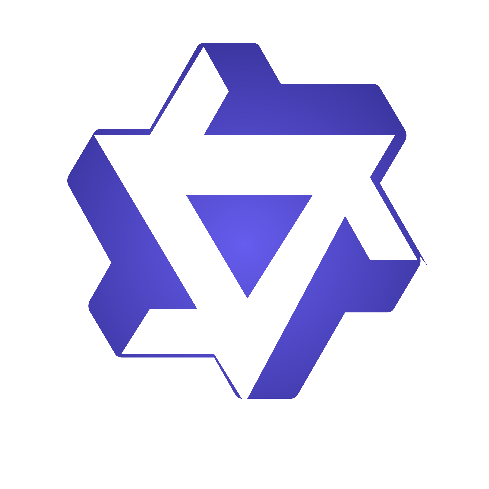

TeamBench
A benchmark of 451 verified software engineering tasks with OS-enforced role separation for measuring when multi-agent collaboration genuinely helps.
A benchmark of 451 verified software engineering tasks with OS-enforced role separation for measuring when multi-agent collaboration genuinely helps.
Existing benchmarks assign roles through system prompts that agents can ignore. TeamBench enforces boundaries at the OS level.
| Benchmark | Structural Enf. | Role Ablation | Collab. Metric | Contam. Resist. | Cross-Model | |
|---|---|---|---|---|---|---|
| SA | SWE-Bench | — | × | × | × | ✓ |
| TerminalBench | — | × | × | × | ✓ | |
| LiveCodeBench | — | × | × | ✓ | ✓ | |
| GAIA | — | × | × | × | ✓ | |
| MLE-Bench | — | × | × | × | ✓ | |
| MA | MultiAgentBench | × | × | ✓ | × | ✓ |
| AgentCoder | × | ~ | × | × | ~ | |
| DevBench | × | × | × | × | ~ | |
| CAMEL | × | × | × | × | × | |
| GPTSwarm | × | × | × | × | × | |
| TeamBench (Ours) | ✓ | ✓ | ✓ | ✓ | ✓ |
Each role runs in an isolated Docker container. No single container can access everything.
Reads the full specification (spec.md). Decomposes requirements, identifies hidden constraints and edge cases, creates an execution plan. Cannot execute code or modify the workspace.
Reads only a brief summary (brief.md). Runs commands and modifies workspace code following the Planner's instructions. Cannot access the full specification.
Reads spec.md and workspace (read-only). Checks compliance against requirements and writes attestation.json. Cannot modify the workspace or run commands.
Container bind mounts create a controlled experiment where role boundaries are physically enforced by the operating system.
Team benefit is conditional, not universal. It concentrates on the hardest tasks and weakest models.
Team coordination helps most when single agents fail. The weakest model shows the largest team uplift.
+32.1% weakest modelPlanning adds +4.8% on average (p=0.02). The Planner's specification relay provides knowledge executors cannot independently access.
+4.8% planning valueCurrent LLM verifiers add no net value and actively hurt 31% of tasks. The most common failure is false rejection of valid solutions.
−5.8% verificationTasks in the hardest quintile (oracle < 22%) show +15.3% team uplift. Easy tasks show negative uplift.
+15.3% on Q1All six closed-source models from three provider families show positive team uplift on pass rate.
6/6 models benefitWhen roles have specialized tools, the team achieves 72% vs 32% oracle, exceeding the single-agent ceiling.
TNI = 1.2528-task TeamBench-Mini subset. Pass rate (%) under each ablation condition.
| # | Model | Org | Oracle | Restr. | NoPlan | NoVer. | Full | Uplift | Date |
|---|---|---|---|---|---|---|---|---|---|
| 1 | GPT-5.4 | OpenAI | 0.0 | 3.6 | 10.7 | 35.7 | 42.9 | +42.9 | 2026-03-22 |
| 2 | Claude Haiku 4.5 | 10.7 | 10.7 | 17.9 | 21.4 | 42.9 | +32.1 | 2026-03-09 | |
| 3 | Claude Sonnet 4.6 | 21.4 | 17.9 | 35.7 | 35.7 | 42.9 | +21.4 | 2026-03-09 | |
| 4 | Gemini 3 Flash | 17.9 | 17.9 | 14.3 | 25.0 | 35.7 | +17.9 | 2026-03-06 | |
| 4 | GPT-5-Mini | OpenAI | 17.9 | 10.7 | 28.6 | 32.1 | 35.7 | +17.9 | 2026-03-09 |
| 6 | Gemini 3.1 Lite | 10.7 | 14.3 | 14.3 | 21.4 | 32.1 | +21.4 | 2026-03-09 | |
| 7 | GPT-5.3-chat | OpenAI | 14.3 | 7.1 | 7.1 | 21.4 | 28.6 | +14.3 | 2026-03-23 |
| 8 | GPT-5-Nano | OpenAI | 14.3 | 0.0 | 14.3 | 7.1 | 17.9 | +3.6 | 2026-03-09 |
| 9 | Qwen3-14B |  Alibaba | 0.0 | 0.0 | 0.0 | 0.0 | 7.1 | +7.1 | 2026-03-17 |
| 10 | Qwen3-8B | Alibaba | 0.0 | 0.0 | 0.0 | 0.0 | 3.6 | +3.6 | 2026-03-17 |
| 11 | Qwen2.5-Coder-32B | Alibaba | 0.0 | 0.0 | 0.0 | 0.0 | 0.0 | 0.0 | 2026-03-22 |
| 11 | DeepSeek-R1-Distill-32B | 0.0 | 0.0 | 0.0 | 0.0 | 0.0 | 0.0 | 2026-03-16 | |
| 11 | Qwen3-4B | Alibaba | 0.0 | 0.0 | 0.0 | 3.6 | 0.0 | 0.0 | 2026-03-17 |
| 11 | Gemma 3 27B | 0.0 | 0.0 | 0.0 | 0.0 | 0.0 | 0.0 | 2026-03-22 |
What happens when you assign a stronger model to one role while keeping others weak? 28-task subset, seed 0.
| Configuration | Planner | Executor | Verifier | Avg. Score | Pass Rate |
|---|---|---|---|---|---|
| Baseline (homogeneous) | G3.1 Lite | G3.1 Lite | G3.1 Lite | 0.597 | 0.0% |
| Executor upgrade (GPT-5-Mini) | G3.1 Lite | GPT-5-Mini | G3.1 Lite | 0.702 | 7.1% |
| Executor upgrade (G3 Flash) | G3.1 Lite | G3 Flash | G3.1 Lite | 0.723 | 10.7% |
| Planner upgrade (GPT-5-Mini) | GPT-5-Mini | G3.1 Lite | G3.1 Lite | 0.642 | 10.7% |
| Planner upgrade (G3 Flash) | G3 Flash | G3.1 Lite | G3.1 Lite | 0.597 | 0.0% |
| Verifier upgrade (G3 Flash) | G3.1 Lite | G3.1 Lite | G3 Flash | 0.615 | 7.1% |
Key insight: Upgrading the Executor yields the largest gains (+0.126 avg score), confirming that implementation capability is the primary bottleneck. Planner upgrades help with pass rate but less with partial scores. Verifier upgrades show modest improvement, consistent with the finding that verification adds limited value.
Full Team minus Oracle, averaged per category
Pass rate (%) — Oracle vs Full Team on 28-task subset
Each dot is one task. Above diagonal = team wins. Hover for task name and scores.
Per-task component contribution. Four quadrants show where each helps or hurts.
Hardest tasks benefit most from team coordination
Average partial score across 147 tasks (Gemini 3 Flash)
Weighted toward hard and expert difficulty (80%). Click categories below for task details.
To add your model to the leaderboard, submit a Pull Request to the
TeamBench repository
with your results JSON file in shared/ablation_results/.
We recommend evaluating on the TeamBench-Mini 28-task subset with all 5 ablation conditions for comparability.
@article{kim2025teambench,
title={TeamBench: Evaluating Agent Collaboration via Software Engineering Tasks},
author={Kim, Yubin},
journal={arXiv preprint},
year={2025}
}
Current version: v1.0 (March 2025)
Tasks: 451 across 25+ categories
Generators: 153 parameterized + 11 static (GitHub)
All tasks produce deterministic instances from arbitrary seeds.
Official track: TeamBench-Mini (28 tasks), all 5 conditions, seed 0
Hidden-seed track: Seeds 3+ are reserved for holdout evaluation
Format: Submit PR with results JSON to the repository
All 451 graders are deterministic shell scripts producing partial scores in [0, 1]. Each grader was validated against both correct and incorrect reference solutions during development.
953 validated tasks in the benchmark
147 with complete 5-condition reference ablation (seed 0)
130 shown in the explorer (tasks with data across all conditions)
28 in TeamBench-Mini (cross-model comparison subset)
TeamBench is evaluation infrastructure, not a deployment prescription. The three-role decomposition represents one natural factorization of understanding, implementation, and validation. We additionally evaluate four alternative topologies (Verify-First, Iterative, Dual-Exec, Self-Check) in a topology ablation. Future versions will add multi-round dialogue and router-worker patterns as first-class evaluation modes.
The oracle is an unrestricted single agent with full access to specification, workspace, and all tools. We tested two enhanced variants (Oracle-CoT and Oracle-2Pass) on the 28-task Mini subset; neither improved over the standard oracle. This establishes that team benefit is structural and cannot be recovered by prompt engineering alone. The oracle label refers to "unrestricted access," not a theoretical upper bound.
Near-zero performance for the seven open-source models we tested reflects tool-use infrastructure failures (malformed function calls, context overflow at 8K tokens), not model capability limitations. All were served via vLLM with max_model_len=8192. Models with native function-calling support and longer context windows should perform better. We are actively evaluating newer open-source models with improved tool-use capabilities.
Each of the 153 generators randomizes surface parameters (variable names, config values, API field names, bug locations) while preserving structural complexity. Seeds 0-2 are used for public evaluation; seeds 3+ are reserved for hidden holdout. A model that memorizes seed-0 solutions gains no advantage on seed-3 instances because the specific values, names, and locations differ. The 11 static GitHub tasks cannot be parameterized but serve as real-world anchors.
The Mini subset is balanced across all 21 categories and uses parameterized generators. Optimizing for 28 specific task structures is unlikely to transfer to the full 451-task benchmark. For high-stakes comparisons, we recommend the full evaluation or the hidden-seed track (seeds 3+), where the specific task instances have never been publicly evaluated.